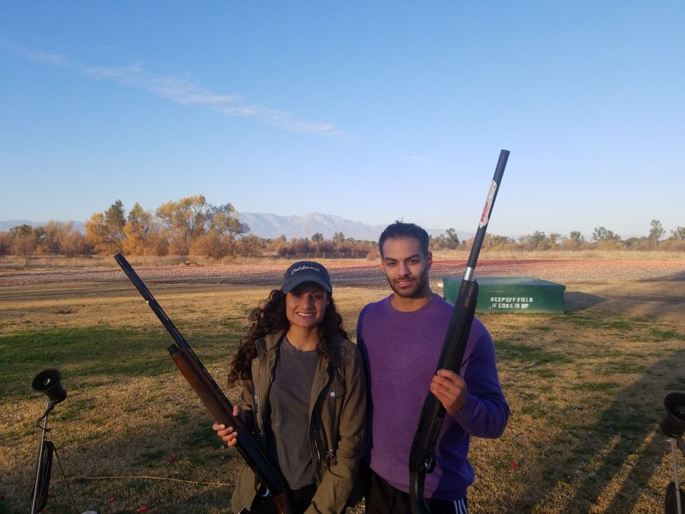
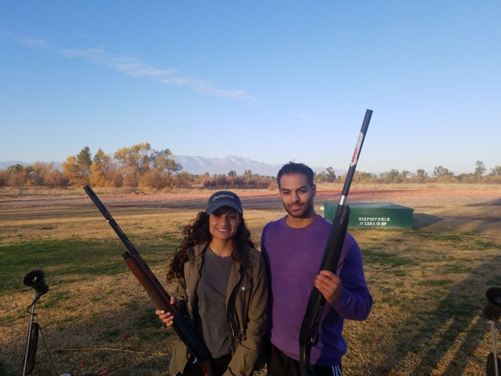

In my free time, I enjoy a long list of hobbies. One of my favorites is playing chess. My favorite opening is the Queens Gambit and have an average Elo rating of 1200. I also enjoy riding motorcycles. Back in college, I used to own a 2007 Kawasaki Ninja which was my main mode of transportation. Dirtbikes and bicycles are also fun to ride, but I have on the lookout for my next street bike. I'm an active member of Toastmasters International, which is a club designed to help people improve their public speaking and leadership skills. I love cats, and while I don't own one, I'm always on the lookout to befriend a stray.


 
